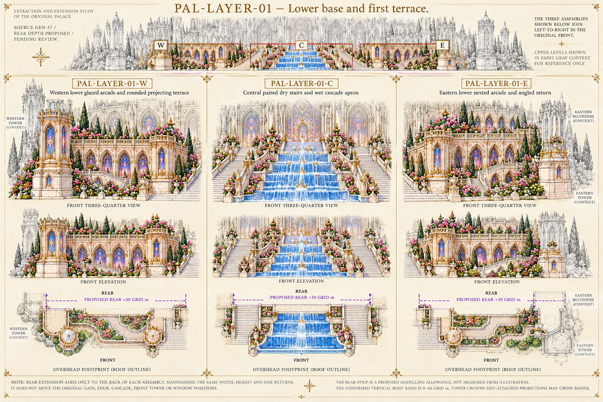
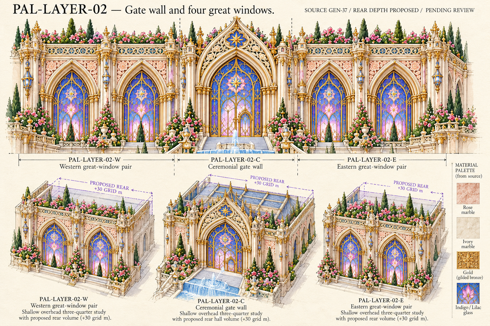
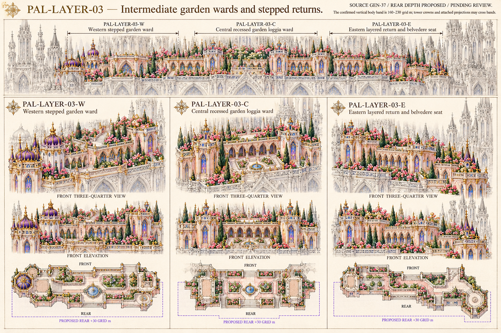
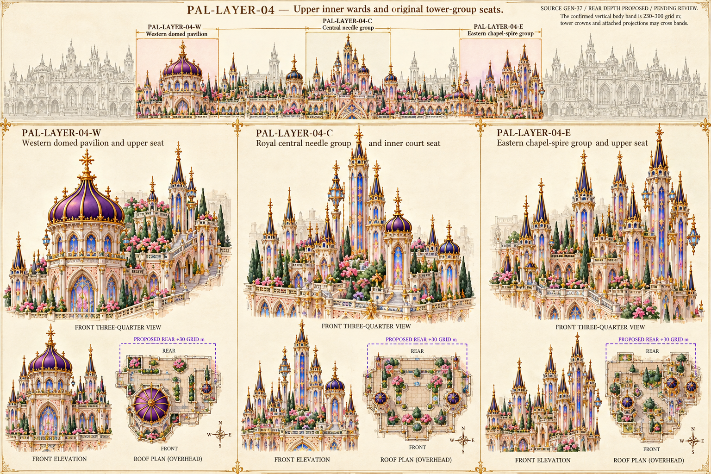

Open one sheet at a time. These are proposed reconstructions; GEN-37 remains authoritative. Rear extensions and generated overhead geometry require review. No completed 3D model is claimed.
Rules and source relationships · Prompts and component IDs · Exact original source regions
Paired dry stairs and central wet cascade present. Views labelled front retain perspective; inferred overhead boundaries and tower attachments require comparison. Context towers may overlap source layer assignments.

Corrected extra domed end towers; top view retains four great windows and one gate. Tracery, small piers, roof hall and side returns are reconstructed; dimensions and agreement between views remain unverified.

Unequal stepped ranges, garden roofs and stair links shown. Additional courts and rear masses are inferred, tower context and bay counts require source comparison. Overhead FRONT orientation differs from earlier sheets; normalize axes during modelling.

Western onion pavilion, central needle group and eastern chapel-spire group present. Exact shaft proportions, attached turret counts and positions differ between some views; rear courtyard arrangements and side ward depth are proposals, not source-traced geometry.
